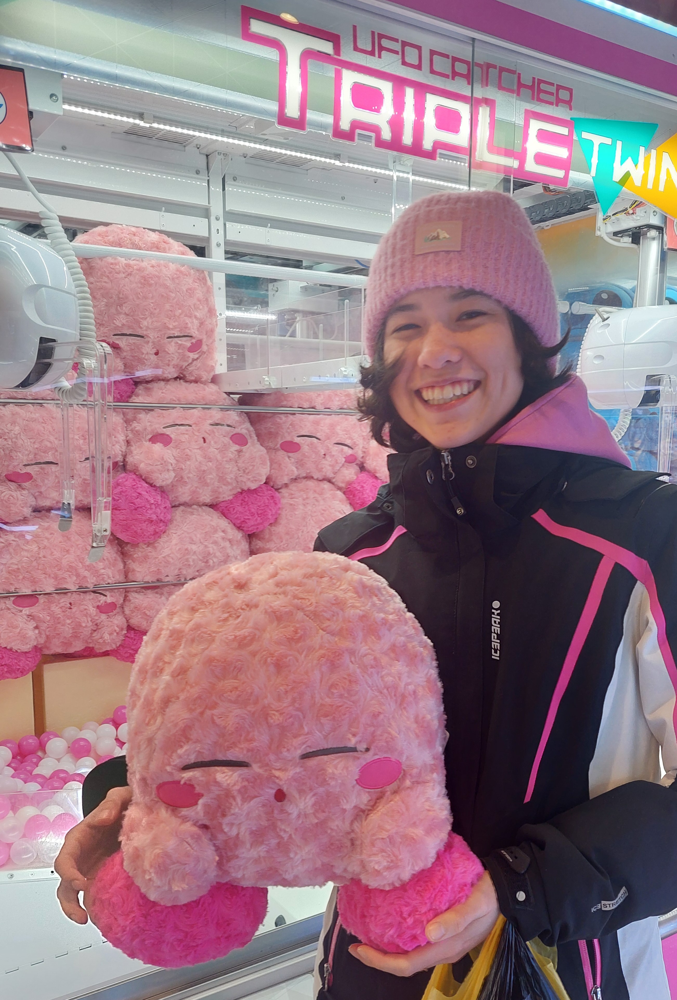

about me
Mimimimimimi

Hi, I'm Treneelie!
or Eileen if you know me outside of the internet.
I love creating things and I am a very curious person. I am a student in microengineering and I like to discover new hobbies or new center of interest.
I like to say dumb things so don't take them seriously.